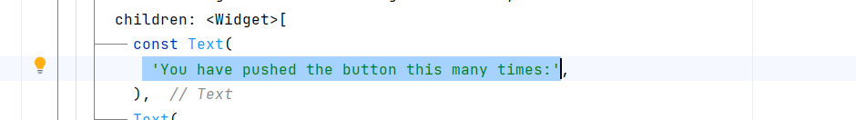
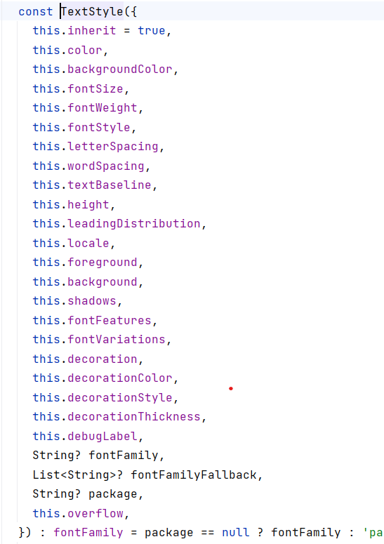

Around the year 2010, companies that made internet browsers (Microsoft, Google, Apple) realized that JavaScript was not a good programming language. It doesn't have type checking, and it's purely an interpreted language. Microsoft proposed a new language called TypeScript, which is a superset of JavaScript, meaning that it does everything JavaScript does, but it can also enforce strong type checking. When publishing a web page in TypeScript, it just gets compiled to JavaScript before it gets run in the browser.
Google developed the language called Dart to be similar to JavaScript except that it can be compiled to native code. Dart is also similar to Java, so it should be easy to learn for those who already know it. Google has further developed the language as the basis for Flutter, which allows Dart to be compiled to machine language on other platforms.
Like with Java, you first write the variable type (int, long, double, boolean) followed by the variable name:
int age; bool done = false; // In Dart, boolean is called bool double pi = 3.14;
However, if you are going to initialize a variable to an initial value, then you can just write var and the compiler will make the variable type to be what it is first equal to:
var done = false; //false is bool var pi = 3.14; // This is a double var age = 50; // This is an int var name = "Eric" // This is String
If you don't want the variable to ever change, meaning that it will always have what it was first initialized to, then you can use const instead of var.
const PI = 3.14; //Always double 3.14 const URL = "http://www.google.com"; //Always String "http://www.google.com
Dart is one of several new languages that introduces a term called Nullable, meaning that the variable can be equal to null, or it can hold an object. If a variable is not nullable, then you can never set it to null:
String name = ""; name = null; //not possible!
To make a variable nullable, you add ? after the object type:
String? name = ""; name = null; // Ok
The reason to do this is to avoid writing explicit checks for null:
if(name != null) return name.length();
can be shortened to
return name?.length;
Another way to explain it is that if an object is not nullable, then you never have to check that it's null because that's impossible!
Functions look the same as in Java:
ReturnType functionName( int a, char b, bool c){ }
If you want to call this function, you have to supply values for the 3 parameters:
functionName( 44, 'a', false)
Dart introduces an idea of named parameters. Instead of relying on the position of the parameters, for instance: int a is the first parameter in the list, and the parameter a gets passed 44. With named parameters, you can instead link the parameter to values:
functionName( c:false, b:'a', a:44);
This way, parameter c gets passed false, parameter b gets passed 'a', and 44 is for the parameter a.
Why would you want this? First of all, because you can specify default values for the parameters of the function:
functionName( int a = 0, bool b = false, String name = "")
but you wrap the parameter list in braces: { } to make them optional. That means that if you don't specify one of the parameters, then it will take the default values.
functionName( {int a = 0, bool b = false, String name = ""})
Now you can call the function but only pass in parameters that you want to change other than the default values. If you only want to change the parameter name, then just pass in the new value
functionName ( name : "Eric" );
The parameter a will get the default value of 0 and parameter b gets the default value of false.
In the code that was generated for your first project, find the file main.dart. You should find the string 'You have pushed the button this many times:' somewhere in the code.

It's in a Text() widget. If you right-click on the Text() constructor, then select "Go to" -> "Declaration or usages", you find this:
This means that everything in the { } is optional. There's only 1 parameter called String this.data which is outside the optional braces. If you want to modify the Text widget, you can supply any of the optional parameters in any order as long as you supply the parameter names. If we want to change the look of the Text, you supply the style: parameter
Text('You have pushed the button this many times:', style:TextStyle( ))
Look at what the TextStyle() constructor is. If you hover your mouse over TextStyle:

If you want to change the size, pass in a new value for the parameter fontSize:
style:TextStyle( fontSize:30 )
If you want to change the font color, give a new value for the color parameter:
style:TextStyle( fontSize:30, color:Colors.blue )
You can reverse the order of fontSize and color parameters.
style:TextStyle( color:Colors.blue, fontSize:30 )
You're used to having to recompile the code in order to make changes and see what's changed. With hot-swapping, you just save the file and the program updates without recompiling or restarting. Run the code in the browser with the new TextStyle. When it's running, change the fontSize to something else and save the file. Watch as the GUI instantly updates without restarting.
Dart is similar to Java when it comes to declaring variables or functions. However, it also lets you write that some parameters are optional and if they're not specified, then they will get their default values. You can also use const to declare a variable as long as you also supply the initial value.